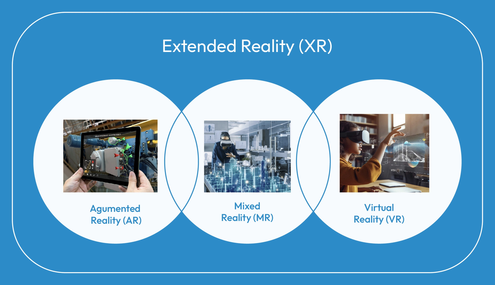
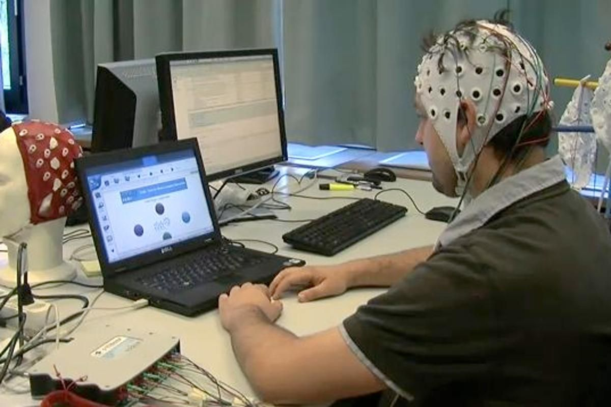
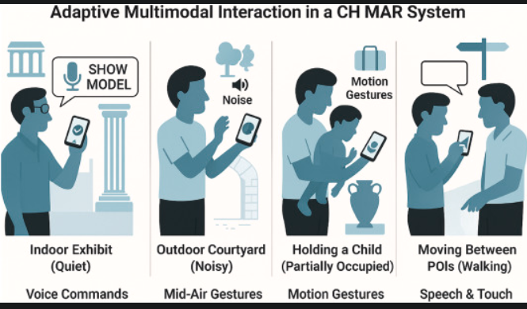
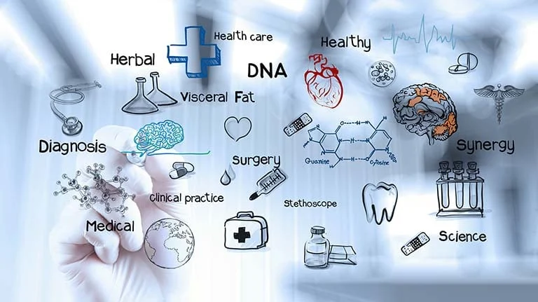
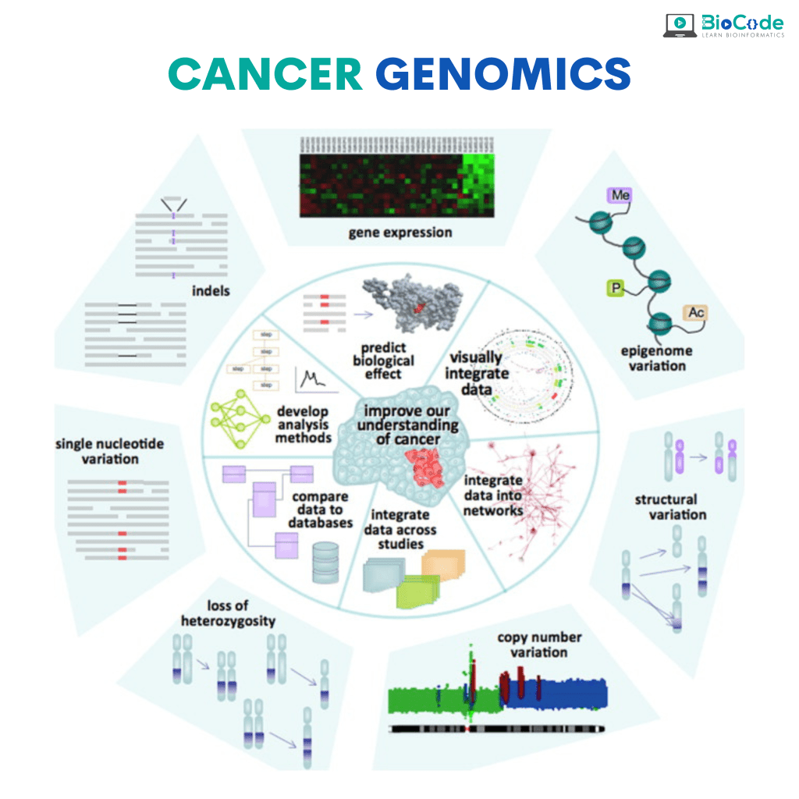
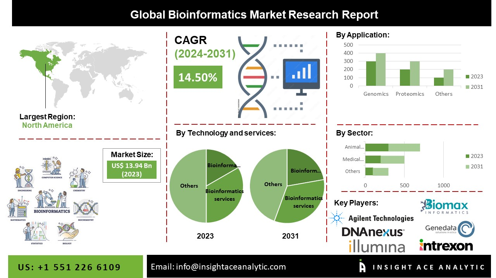
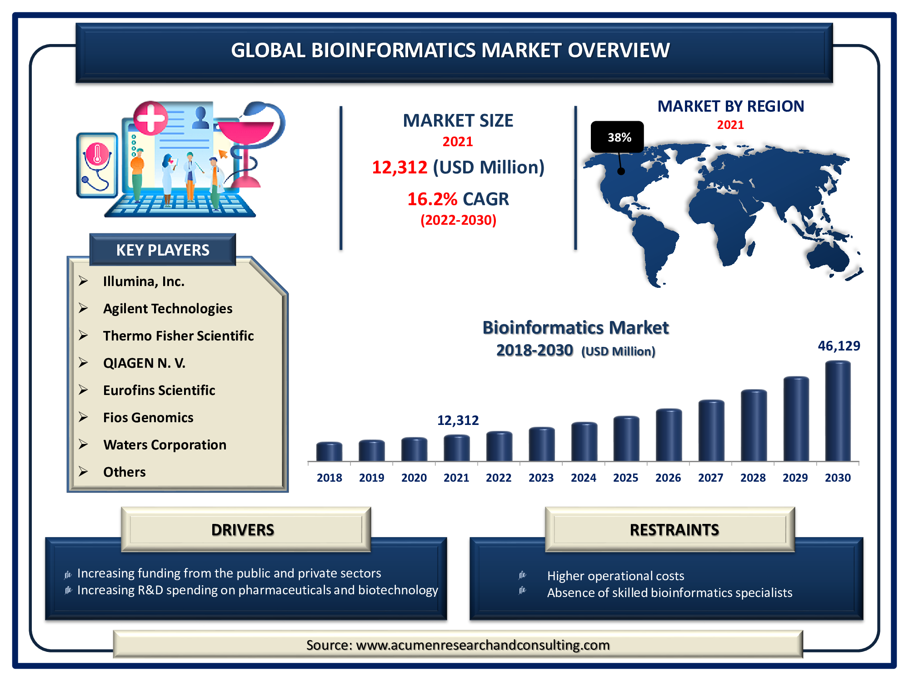
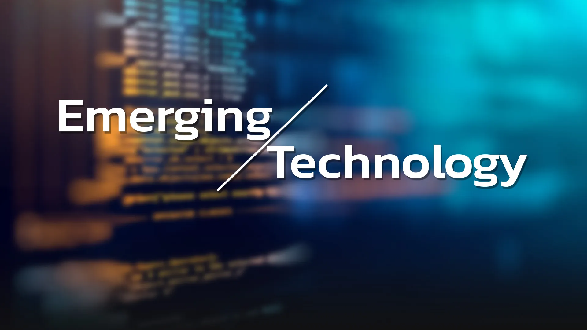

Research by Ben
Back to Main PageExtended reality, usually called XR, includes technologies such as virtual reality, augmented reality, and mixed reality that combine virtual images and environments with the real world. According to the TechTarget article on extended reality, these technologies are already being used in areas like education, healthcare training, and entertainment. In Canada, XR could help train medical students and surgeons by allowing them to practice procedures in realistic simulations before working with real patients. For example, medical schools and hospitals can use virtual environments to safely practice different surgeries. This can help reduce mistakes and improve confidence before doing the real thing. However, XR equipment like VR headsets can still be expensive, which might limit its accessablility.

Source: TechTarget - What is Extended Reality
Brain computer interfaces, or BCIs, allow the brain to communicate directly with a computer. The PMC research article on BCIs and communication disabilities explains that this technology can help people who have severe movement disorders like ALS patients, people with spinal cord injuries, as well as people with locked in syndrome. BCIs can help translate brain signals into instructions so a person can type messages or control their assistive devices. For someone who has lost the ability to communicate, this technology could help restore their ability to connect with others. However, these systems are still being tested and are very expensive, which means not everyone who needs it will have access to it.

Source: PMC - Brain Computer Interfaces and Communication Disabilities
Multimodal user interfaces allow people to interact with technology using different methods, like voice, touch, gestures, and visual feedback. The ScienceDirect article on multimodal interfaces talks about combining multiple interaction methods that can make technology easier and more natural to use. In developing societies such as India, Kenya, Bangladesh, and rural areas across Africa, smartphones are the main way people connect. And Voice commands or gesture controls can help people who may have limited literacy skills or less experience with computers. While this technology could improve access to information and education, it still depends onstable internet connections and modern devices that are not avaliable in some developing societies.

Source: ScienceDirect - Multimodal User Interfaces Research
Post quantum cryptography is about creating encryption systems that will stay secure even when powerful computers are developed. According to the NIST article on post quantum cryptography, today's encryption protects things like online banking, private communication, and government data. However, in the future some quantum computers may be able to break current encryption methods. Researchers are working on new algorithms designed to resist these threats. This technology is important for the world economy because global banking, e commerce, and digital communications depend on secure data. But updating systems worldwide will require time and investment but will help protect the global economy.
Source: NIST - Post Quantum Cryptography FAQ/Overview
Bioinformatics is an emerging technology that combines biology, computer science, and data analysis to study large amounts of biological information. Instead of looking at DNA, genes, or proteins at a lab, scientists use computers to organize and analyze huge sets of biological data much faster than people could on their own. This is especially important in medicine because researchers are now able collect enormous amounts of genetic information. Bioinformatics helps them find patterns, compare DNA, and help understand how different diseases develop. It is being used in areas like cancer research, personalized medicine, disease tracking, and drug discovery. As this field continues to grow, it is changing healthcare and research in Canada and around the world.

One positive impact of bioinformatics is that it can improve medical treatment. In the Roche article on bioinformatics in personalized medicine, bioinformatics is described as an important part of making medicine customized to specific people. By studying a person’s genetic information, doctors may be able to choose treatments that are more likely to work for that specific person. This can be especially helpful in serious illnesses such as cancer, where patients can respond differently to the same treatment. In Canada, this could mean better treatment plans and fewer side effects for patients. Instead of using a one size fits all approach, doctors can make decisions based more on the biology of the individual.

Another positive impact is that bioinformatics helps researchers understand diseases more quickly and clearly. The Cancer Genome Project article shows how scientists study the genetic mutations connected to cancer. This kind of research helps doctors and scientists understand why certain cancers grow, how they spread, and which mutations may be responsible. That matters in real life because it can lead to earlier diagnosis and more targeted treatments. It also helps researchers compare information from many patients instead of just one case at a time. Around the world, this can support faster scientific progress and better cooperation between research teams. In a health crisis or major disease study like covid, speed and accuracy are extremely important.

However, bioinformatics also has negative impacts. One major concern is privacy. Genetic information is very personal, and once it is collected and stored there is always a risk that it could be misused, leaked, or shared without permission. This becomes even more important for minority communities and Indigenous people in Canada, who may have valid concerns about who controls their data and how it is used. If communities feel that genetic information is being collected without enough transparency or respect there could be consequences. Bioinformatics can offer importnat medical benefits, but those benefits must be balanced with strong rules for privacy.
Another negative impact is inequality in access. The article on the applications of bioinformatics and the IntechOpen chapter on bioinformatics show that this field depends on advanced computers, specialized software, large databases, and highly trained experts. Wealthier countries, hospitals, and research institutions are much more likely to have these resources. This means that people in lower income regions or developing societies may not benefit as quickly from new discoveries. For example, bioinformatics may help identify diseases or improve crops in developing countries, but those benefits can be limited if internet access, equipment, or trained workers are not available. So while the technology has global potential, the advantages are not always shared equally.
Bioinformatics also has an important economic impact, which can be both positive and negative. On the positive side, bioinformatics supports the growth of industries such as biotechnology, pharmaceuticals, diagnostics, and medical research. Companies can use it to speed up drug discovery, improve testing, and develop more advanced healthcare products. This can create jobs and investment in countries with strong research systems. On the negative side, the cost of building and maintaining these systems is high. Poorer countries or smaller institutions may struggle to keep up, which can widen the gap between wealthier and less wealthy parts of the world. In that way, bioinformatics can help the global economy grow while also increasing economic inequality.

Overall, bioinformatics is a very important emerging technology because it can improve medicine, support research, and help scientists better understand disease. At the same time, there are some cons about privacy, fairness, access, and cost. In Canada, it could improve patient care and strengthen medical research. Around the world, it could help scientists respond to diseases and make healthcare more precise. But if it is not managed carefully, some people and communities can be left behind.
Video: Watch a video about bioinformatics
Sources used in this section:
Cancer Genome Project
Roche: Bioinformatics in Personalized Medicine
Applications of Bioinformatics
IntechOpen: Bioinformatics
